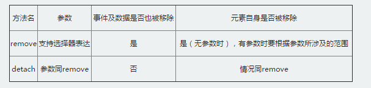

DOM创建节点及节点属性 通过JavaScript可以很方便的获取DOM节点，从而进行一系列的DOM操作。但实际上一般开发者都习惯性的先定义好HTML结构，但这样就非常不灵活了。 试想下这样的情况：如果我们通过AJAX获取到数据之后然后才能确定结构的话，这种情况就需要动态的处理节点了 本文向大家介绍一下如何使用JavaScript创建div节点元素，主要包括创建div节点元素的属性和创建div节点元素的样式两大部分内容，相信本文介绍一定会让你有所收获。 先介绍下需要用到的浏览器提供的一些原生的方法（这里不处理低版本的IE兼容问题） 创建流程比较简单，大体如下：
流程中涉及的一点方法：
如右边代码所示，写一个最简单的元素创建，我们会发现几个问题：
针对这一系列的DOM操作的问题，jQuery给出了一套非常完美的接口方法，我们之后就开始深入学习 |
jQuery节点创建与属性的处理上一节介绍了通过JavaScript原生接口创建节点，在处理上是非常复杂与繁琐的。我们可以通过使用jQuery来简化了这个过程 创建元素节点： 可以有几种方式，后面会慢慢接触。常见的就是直接把这个节点的结构给通过HTML标记字符串描述出来，通过$()函数处理，$("html结构")
$("<div></div>")
创建为本节点： 与创建元素节点类似，可以直接把文本内容一并描述
$("<div>我是文本节点</div>")
创建为属性节点： 与创建元素节点同样的方式
$("<div id='test' class='aaron'>我是文本节点</div>")
我们通过jQuery把上一届的代码改造一下，如右边代码所示 一条一句就搞定了，跟写HTML结构方式是一样的
$("<div class='right'><div class='aaron'>动态创建DIV元素节点</div></div>")
这就是jQuery创建节点的方式，让我们保留HTML的结构书写方式，非常的简单、方便和灵活 |
DOM内部插入append()与appendTo()动态创建的元素是不够的，它只是临时存放在内存中，最终我们需要放到页面文档并呈现出来。那么问题来了，怎么放到文档上？ 这里就涉及到一个位置关系，常见的就是把这个新创建的元素，当作页面某一个元素的子元素放到其内部。针对这样的处理，jQuery就定义2个操作的方法
append：这个操作与对指定的元素执行原生的appendChild方法，将它们添加到文档中的情况类似。 appendTo：实际上，使用这个方法是颠倒了常规的$(A).append(B)的操作，即不是把B追加到A中，而是把A追加到B中。
.append()和.appendTo()两种方法功能相同，主要的不同是语法——内容和目标的位置不同 append()前面是被插入的对象，后面是要在对象内插入的元素内容 appendTo()前面是要插入的元素内容，而后面是被插入的对象 |
DOM外部插入after()与before()节点与节点之前有各种关系，除了父子，祖辈关系，还可以是兄弟关系。之前我们在处理节点插入的时候，接触到了内部插入的几个方法，这节我们开始讲外部插入的处理，也就是兄弟之间的关系处理，这里jQuery引入了2个方法，可以用来在匹配I的元素前后插入内容 选择器的描述：
注意点：
|
DOM内部插入prepend()与prependTo()在元素内部进行操作的方法，除了在被选元素的结尾（仍然在内部）通过append与appendTo插入指定内容外，相应的还可以在被选元素之前插入，jQuery提供的方法是prepend与prependTo 选择器的描述：
通过右边代码可以看到prepend与prependTo的使用及区别：
这里总结下内部操作四个方法的区别：
|
DOM外部插入insertAfter()与insertBefore()与内部插入处理一样，jQuery由于内容目标的位置不同，然增加了2个新的方法insertAfter与insertBefore
注意事项：
|
DOM节点删除之empty()的基本用法要移除页面上节点是开发者常见的操作，jQuery提供了几种不同的方法用来处理这个问题，这里我们开仔细了解下empty方法 empty 顾名思义，清空方法，但是与删除又有点不一样，因为它只移除了 指定元素中的所有子节点。 这个方法不仅移除子元素（和其他后代元素），同样移除元素里的文本。因为，根据说明，元素里任何文本字符串都被看做是该元素的子节点。请看下面的HTML： <div class="hello"><p>慕课网</p></div> 如果我们通过empty方法移除里面div的所有元素，它只是清空内部的html代码，但是标记仍然留在DOM中
//通过empty处理
$('.hello').empty()
//结果：<p>慕课网</p>被移除
<div class="hello"></div>
通过empty移除了当前div元素下的所有p元素 但是本身id=test的div元素没有被删除 |
DOM节点删除之remove()的有参用法和无参用法remove与empty一样，都是移除元素的方法，但是remove会将元素自身移除，同时也会移除元素内部的一切，包括绑定的事件及与该元素相关的jQuery数据。 例如一段节点，绑定点击事件
<div class="hello"><p>慕课网</p></div>
$('.hello').on("click",fn)
如果不通过remove方法删除这个节点其实也很简单，但是同时需要把事件给销毁掉，这里是为了防止"内存泄漏"，所以前端开发者一定要注意，绑了多少事件，不用的时候一定要记得销毁 通过remove方法移除div及其内部所有元素，remove内部会自动操作事件销毁方法，所以使用使用起来非常简单
//通过remove处理
$('.hello').remove()
//结果：<div class="hello"><p>慕课网</p></div> 全部被移除
//节点不存在了,同事事件也会被销毁
remove表达式参数： remove比empty好用的地方就是可以传递一个选择器表达式用来过滤将被移除的匹配元素集合，可以选择性的删除指定的节点 我们可以通过$()选择一组相同的元素，然后通过remove（）传递筛选的规则，从而这样处理 对比右边的代码区域，我们可以通过类似于这样处理 $("p").filter(":contains('3')").remove() |
DOM节点删除之empty和remove区别要用到移除指定元素的时候，jQuery提供了empty()与remove([expr])二个方法，两个都是删除元素，但是两者还是有区别 empty方法
remove方法
以上就是二者的区别，我们具体通过右边代码部分加深理解 |
DOM节点删除之保留数据的删除操作detach()如果我们希望临时删除页面上的节点，但是又不希望节点上的数据与事件丢失，并且能在下一个时间段让这个删除的节点显示到页面，这时候就可以使用detach方法来处理 detach从字面上就很容易理解。让一个web元素托管。即从当前页面中移除该元素，但保留这个元素的内存模型对象。 来看看jquery官方文档的解释：
这个方法不会把匹配的元素从jQuery对象中删除，因而可以在将来再使用这些匹配的元素。与remove()不同的是，所有绑定的事件、附加的数据等都会保留下来。
$("div").detach()这一句会移除对象，仅仅是显示效果没有了。但是内存中还是存在的。当你append之后，又重新回到了文档流中。就又显示出来了。
当然这里要特别注意，detach方法是JQuery特有的，所以它只能处理通过JQuery的方法绑定的事件或者数据 参考右边的代码区域，通过 $("p").detach()把所有的P元素删除后，再通过append把删除的p元素放到页面上，通过点击文字，可以证明事件没有丢失 |
DOM节点删除之detach()和remove()区别JQuery是一个很大强的工具库，在工作开发中，有些方法因为不常用到，或是没有注意到而被我们忽略。 remove()和detach()可能就是其中的一个，可能remove()我们用得比较多，而detach()就可能会很少了 通过一张对比表来解释2个方法之间的不同  remove：移除节点
detach：移除节点
具体可以参考右边的代码区域的对比 |
DOM拷贝clone()克隆节点是DOM的常见操作，jQuery提供一个clone方法，专门用于处理dom的克隆 .clone()方法深度 复制所有匹配的元素集合，包括所有匹配元素、匹配元素的下级元素、文字节点。 clone方法比较简单就是克隆节点，但是需要注意，如果节点有事件或者数据之类的其他处理，我们需要通过clone(ture)传递一个布尔值ture用来指定，这样不仅仅只是克隆单纯的节点结构，还要把附带的事件与数据给一并克隆了 例如：
HTML部分
<div></div>
JavaScript部分
$("div").on('click', function() {//执行操作})
//clone处理一
$("div").clone() //只克隆了结构，事件丢失
//clone处理二
$("div").clone(true) //结构、事件与数据都克隆
使用上就是这样简单，使用克隆的我们需要额外知道的细节：
|
DOM替换replaceWith()和replaceAll()之前学习了节点的内插入、外插入以及删除方法，这节会学习替换方法replaceWith .replaceWith( newContent )：用提供的内容替换集合中所有匹配的元素并且返回被删除元素的集合 简单来说：用$()选择节点A，调用replaceWith方法，传入一个新的内容B（HTML字符串，DOM元素，或者jQuery对象）用来替换选中的节点A 看个简单的例子：一段HTML代码
<div>
<p>第一段</p>
<p>第二段</p>
<p>第三段</p>
</div>
替换第二段的节点与内容
$("p:eq(1)").replaceWith('<a style="color:red">替换第二段的内容</a>')
通过jQuery筛选出第二个p元素，调用replaceWith进行替换，结果如下
<div>
<p>第一段</p>
<a style="color:red">替换第二段的内容</a>'
<p>第三段</p>
</div>
.replaceAll( target ) ：用集合的匹配元素替换每个目标元素 .replaceAll()和.replaceWith()功能类似，但是目标和源相反，用上述的HTML结构，我们用replaceAll处理
$('<a style="color:red">替换第二段的内容</a>').replaceAll('p:eq(1)')
总结：
|
DOM包裹wrap()方法如果要将元素用其他元素包裹起来，也就是给它增加一个父元素，针对这样的处理，JQuery提供了一个wrap方法 .wrap( wrappingElement )：在集合中匹配的每个元素周围包裹一个HTML结构 简单的看一段代码： <p>p元素</p> 给p元素增加一个div包裹
$('p').wrap('<div></div>')
最后的结构，p元素增加了一个父div的结构
<div>
<p>p元素</p>
</div>
.wrap( function ) ：一个回调函数，返回用于包裹匹配元素的 HTML 内容或 jQuery 对象 使用后的效果与直接传递参数是一样，只不过可以把代码写在函数体内部，写法不同而已 以第一个案例为例：
$('p').wrap(function() {
return '<div></div>'; //与第一种类似，只是写法不一样
})
注意： .wrap()函数可以接受任何字符串或对象，可以传递给$()工厂函数来指定一个DOM结构。这种结构可以嵌套了好几层深，但应该只包含一个核心的元素。每个匹配的元素都会被这种结构包裹。该方法返回原始的元素集，以便之后使用链式方法。 |
DOM包裹unwrap()方法我们可以通过wrap方法给选中元素增加一个包裹的父元素。相反，如果删除选中元素的父元素要如何处理 ? jQuery提供了一个unwarp()方法 ，作用与wrap方法是相反的。将匹配元素集合的父级元素删除，保留自身（和兄弟元素，如果存在）在原来的位置。 看一段简单案例：
<div>
<p>p元素</p>
</div>
我要删除这段代码中的div，一般常规的方法会直接通过remove或者empty方法
$('div').remove();
但是如果我还要保留内部元素p，这样就意味着需要多做很多处理，步骤相对要麻烦很多，为了更便捷，jQuery提供了unwarp方法很方便的处理了这个问题
$('p').unwarp();
找到p元素，然后调用unwarp方法，这样只会删除父辈div元素了 结果： <p>p元素</p> 这个方法比较简单，也不接受任何参数，注意参考下案例的使用即可 |
DOM包裹wrapAll()方法wrap是针对单个dom元素处理，如果要将集合中的元素用其他元素包裹起来，也就是给他们增加一个父元素，针对这样的处理，JQuery提供了一个wrapAll方法 .wrapAll( wrappingElement )：给集合中匹配的元素增加一个外面包裹HTML结构 简单的看一段代码： <p>p元素</p> <p>p元素</p> 给所有p元素增加一个div包裹
$('p').wrapAll('<div></div>')
最后的结构，2个P元素都增加了一个父div的结构
<div>
<p>p元素</p>
<p>p元素</p>
</div>
.wrapAll( function ) ：一个回调函数，返回用于包裹匹配元素的 HTML 内容或 jQuery 对象 通过回调的方式可以单独处理每一个元素 以上面案例为例，
$('p').wrapAll(function() {
return '<div><div/>';
})
以上的写法的结果如下，等同于warp的处理了
<div>
<p>p元素</p>
</div>
<div>
<p>p元素</p>
</div>
注意： .wrapAll()函数可以接受任何字符串或对象，可以传递给$()工厂函数来指定一个DOM结构。这种结构可以嵌套多层，但是最内层只能有一个元素。所有匹配元素将会被当作是一个整体，在这个整体的外部用指定的 HTML 结构进行包裹。 |
DOM包裹wrapInner()方法如果要将合集中的元素内部所有的子元素用其他元素包裹起来，并当作指定元素的子元素，针对这样的处理，JQuery提供了一个wrapInner方法 .wrapInner( wrappingElement )：给集合中匹配的元素的内部，增加包裹的HTML结构 听起来有点绕，可以用个简单的例子描述下，简单的看一段代码： <div>p元素</div> <div>p元素</div> 给所有元素增加一个p包裹
$('div').wrapInner('<p></p>')
最后的结构，匹配的di元素的内部元素被p给包裹了
<div>
<p>p元素</p>
</div>
<div>
<p>p元素</p>
</div>
.wrapInner( function ) ：允许我们用一个callback函数做参数，每次遇到匹配元素时，该函数被执行，返回一个DOM元素，jQuery对象，或者HTML片段，用来包住匹配元素的内容 以上面案例为例，
$('div').wrapInner(function() {
return '<p></p>';
})
以上的写法的结果如下，等同于第一种处理了
<div>
<p>p元素</p>
</div>
<div>
<p>p元素</p>
</div>
注意： 当通过一个选择器字符串传递给.wrapInner() 函数，其参数应该是格式正确的 HTML，并且 HTML 标签应该是被正确关闭的。 |
jQuery遍历之children()方法jQuery是一个合集对象，如果想快速查找合集里面的第一级子元素，此时可以用children()方法。这里需要注意：.children(selector) 方法是返回匹配元素集合中每个元素的所有子元素（仅儿子辈，这里可以理解为就是父亲-儿子的关系） 理解节点查找关系：
<div class="div">
<ul class="son">
<li class="grandson">1</li>
</ul>
</div>
代码如果是$("div").children()，那么意味着只能找到ul，因为div与ul是父子关系，li与div是祖辈关系，因此无法找到。 children()无参数 允许我们通过在DOM树中对这些元素的直接子元素进行搜索，并且构造一个新的匹配元素的jQuery对象 注意：jQuery是一个合集对象，所以通过children是匹配合集中每一给元素的第一级子元素 .children()方法选择性地接受同一类型选择器表达式
$("div").children(".selected")
同样的也是因为jQuery是合集对象，可能需要对这个合集对象进行一定的筛选，找出目标元素，所以允许传一个选择器的表达式 |
jQuery遍历之find()方法jQuery是一个合集对象，如果想快速查找DOM树中的这些元素的后代元素，此时可以用find()方法，这也是开发使用频率很高的方法。这里要注意 children与find方法的区别，children是父子关系查找，find是后代关系（包含父子关系） 理解节点查找关系：
<div class="div">
<ul class="son">
<li class="grandson">1</li>
</ul>
</div>
代码如果是$("div").find("li")，此时，li与div是祖辈关系，通过find方法就可以快速的查找到了。 .find()方法要注意的知识点：
注意重点： .find()和.children()方法是相似的 1.children只查找第一级的子节点 2.find查找范围包括子节点的所有后代节点 |
jQuery遍历之parent()方法jQuery是一个合集对象，如果想快速查找合集里面的每一个元素的父元素（这里可以理解为就是父亲-儿子的关系），此时可以用parent()方法 因为是父元素，这个方法只会向上查找一级 理解节点查找关系：
<div class="div">
<ul class="son">
<li class="grandson">1</li>
</ul>
</div>
查找ul的父元素div, $(ul).parent()，就是这样简单的表达 parent()无参数 parent()方法允许我们能够在DOM树中搜索到这些元素的父级元素，从有序的向上匹配元素，并根据匹配的元素创建一个新的 jQuery 对象 注意：jQuery是一个合集对象，所以通过parent是匹配合集中每一个元素的父元素 parent()方法选择性地接受同一型选择器表达式 同样的也是因为jQuery是合集对象，可能需要对这个合集对象进行一定的筛选，找出目标元素，所以允许传一个选择器的表达式 |
jQuery遍历之parents()方法jQuery是一个合集对象，如果想快速查找合集里面的每一个元素的所有祖辈元素，此时可以用parents()方法 其实也类似find与children的区别，parent只会查找一级，parents则会往上一直查到查找到祖先节点 理解节点查找关系：
<div class="div">
<ul class="son">
<li class="grandson">1</li>
</ul>
</div>
在li节点上找到祖 辈元素div， 这里可以用$("li").parents()方法 parents()无参数 parents()方法允许我们能够在DOM树中搜索到这些元素的祖先元素，从有序的向上匹配元素，并根据匹配的元素创建一个新的 jQuery 对象; 返回的元素秩序是从离他们最近的父级元素开始的 注意：jQuery是一个合集对象，所以通过parent是匹配合集中所有元素的祖辈元素 parents()方法选择性地接受同一型选择器表达式 同样的也是因为jQuery是合集对象，可能需要对这个合集对象进行一定的筛选，找出目标元素，所以允许传一个选择器的表达式 注意事项： 1 .parents()和.parent()方法是相似的，但后者只是进行了一个单级的DOM树查找 2 $( "html" ).parent()方法返回一个包含document的集合，而$( "html" ).parents()返回一个空集合。 |
jQuery遍历之closest()方法以选定的元素为中心，往内查找可以通过find、children方法。如果往上查找，也就是查找当前元素的父辈祖辈元素，jQuery提供了closest()方法，这个方法类似parents但是又有一些细微的区别，属于使用频率很高的方法 closest()方法接受一个匹配元素的选择器字符串 从元素本身开始，在DOM 树上逐级向上级元素匹配，并返回最先匹配的祖先元素 例如：在div元素中，往上查找所有的li元素，可以这样表达
$("div").closet("li')
注意：jQuery是一个合集对象，所以通过closest是匹配合集中每一个元素的祖先元素 closest()方法给定的jQuery集合或元素来过滤元素 同样的也是因为jQuery是合集对象，可能需要对这个合集对象进行一定的筛选，找出目标元素，所以允许传一个jQuery的对象 注意事项：在使用的时候需要特别注意下 粗看.parents()和.closest()是有点相似的，都是往上遍历祖辈元素，但是两者还是有区别的，否则就没有存在的意义了
|
jQuery遍历之next()方法jQuery是一个合集对象，如果想快速查找指定元素集合中每一个元素紧邻的后面同辈元素的元素集合，此时可以用next()方法 理解节点查找关系： 如下class="item-1"元素就是红色部分，那蓝色的class="item-2"就是它的兄弟元素 <ul class="level-3"> <li class="item-1">1</li> <li class="item-2">2</li> <li class="item-3">3</li> </ul> next()无参数 允许我们找遍元素集合中紧跟着这些元素的直接兄弟元素，并根据匹配的元素创建一个新的 jQuery 对象。 注意：jQuery是一个合集对象，所以通过next匹配合集中每一个元素的下一个兄弟元素 next()方法选择性地接受同一类型选择器表达式 同样的也是因为jQuery是合集对象，可能需要对这个合集对象进行一定的筛选，找出目标元素，所以允许传一个选择器的表达式 |
jQuery遍历之prev()方法jQuery是一个合集对象，如果想快速查找指定元素集合中每一个元素紧邻的前面同辈元素的元素集合，此时可以用prev()方法 理解节点查找关系： 如下蓝色的class="item-2"的li元素，红色的节点就是它的prev兄弟节点
<ul class="level-3">
<li class="item-1">1</li>
<li class="item-2">2</li>
<li class="item-3">3</li>
</ul>
prev()无参数 取得一个包含匹配的元素集合中每一个元素紧邻的前一个同辈元素的元素集合 注意：jQuery是一个合集对象，所以通过prev是匹配合集中每一个元素的上一个兄弟元素 prev()方法选择性地接受同一类型选择器表达式 同样的也是因为jQuery是合集对象，可能需要对这个合集对象进行一定的筛选，找出目标元素，所以允许传一个选择器的表达式 |
jQuery遍历之siblings()jQuery是一个合集对象，如果想快速查找指定元素集合中每一个元素的同辈元素，此时可以用siblings()方法 理解节点查找关系： 如下蓝色的class="item-2"的li元素，红色的节点就是它的siblings兄弟节点 <ul class="level-3"> <li class="item-1">1</li> <li class="item-2">2</li> <li class="item-3">3</li> </ul> siblings()无参数 取得一个包含匹配的元素集合中每一个元素的同辈元素的元素集合 注意：jQuery是一个合集对象，所以通过siblings是匹配合集中每一个元素的同辈元素 siblings()方法选择性地接受同一类型选择器表达式 同样的也是因为jQuery是合集对象，可能需要对这个合集对象进行一定的筛选，找出目标元素，所以允许传一个选择器的表达式 |
jQuery遍历之add()方法jQuery是一个合集对象，通过$()方法找到指定的元素合集后可以进行一系列的操作。$()之后就意味着这个合集对象已经是确定的，如果后期需要再往这个合集中添加一新的元素要如何处理？jQuery为此提供add方法，用来创建一个新的jQuery对象 ，元素添加到匹配的元素集合中 .add()的参数可以几乎接受任何的$()，包括一个jQuery选择器表达式，DOM元素，或HTML片段引用。 简单的看一个案例： 操作：选择所有的li元素，之后把p元素也加入到li的合集中
<ul>
<li>list item 1</li>
<li>list item 3</li>
</ul>
<p>新的p元素</p>
处理一：传递选择器
$('li').add('p')
处理二：传递dom元素
$('li').add(document.getElementsByTagName('p')[0])
还有一种方式，就是动态创建P标签加入到合集，然后插入到指定的位置，但是这样就改变元素的本身的排列了 $('li').add('<p>新的p元素</p>').appendTo(目标位置) |
jQuery遍历之each()jQuery是一个合集对象，通过$()方法找到指定的元素合集后可以进行一系列的操作。比如我们操作$("li").css('') 给所有的li设置style值，因为jQuery是一个合集对象，所以css方法内部就必须封装一个遍历的方法，被称为隐式迭代的过程。要一个一个给合集中每一个li设置颜色，这里方法就是each .each() 方法就是一个for循环的迭代器，它会迭代jQuery对象合集中的每一个DOM元素。每次回调函数执行时，会传递当前循环次数作为参数(从0开始计数 所以大体上了解3个重点： each是一个for循环的包装迭代器 each通过回调的方式处理，并且会有2个固定的实参，索引与元素 each回调方法中的this指向当前迭代的dom元素 看一个简单的案例
<ul>
<li>慕课网</li>
<li>Aaron</li>
</ul>
开始迭代li，循环2次
$("li").each(function(index, element) {
index 索引 0,1
element是对应的li节点 li,li
this 指向的是li
})
这样可以在循环体会做一些逻辑操作了，如果需要提前退出，可以以通过返回 false以便在回调函数内中止循 |


{kind=link}